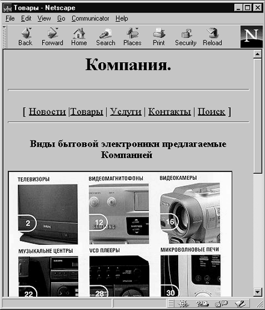

Активные изображения (image maps), или изображения, чувствующие щелчки мыши, позволят вам создать на своем узле графические меню произвольной формы. Пользуясь таким меню, читатели смогут путешествовать по всем закоулкам и проспектам вашего Web-узла. Активное изображение - это просто картинка с так называемыми активными областями (hot spots), которые ссылаются на URL других страниц или узлов. Работает такое изображение следующим образом: когда пользователь щелкает мышкой на картинке, определенной как активное изображение с помощью атрибута ISМАР в тэге IMG, координаты щелчка передаются на Web-сервер. Сервер ищет в карте (mapfile) активную область, содержащую переданные координаты. Если такая область находится, заданный в карте URL активируется, и броузер пользователя переходит на новую страницу.
С помощью активных изображений вы можете решить сразу две задачи: создать меню своего Web-узла и разместить на нем графику.
В зависимости от того, на какие броузеры вы ориентируетесь, вам может понадобиться доступ к каталогу cgi-bin на вашем Web-сервере. Возможно, вам придется попросить у администратора своего Web-сервера разрешения записать туда файлы. Тем не менее, размещать активные изображения очень легко. Процесс их создания может поначалу показаться трудным, но существуют доступные программы, с помощью которых для конструирования таких изображений достаточно указать мышкой границы активных областей и задать каждой из них свой URL.
Есть два типа активных изображений: на сервере и, новая разновидность, у клиента. Изображения первого типа используют сервер для того, чтобы найти соответствующий данной активной области URL и передать на броузер нужную страницу. Активные изображения, работающие на клиентской машине, задают информацию об активной области на НТМL-странице, так что броузер сам выясняет, какие области являются активными, и запрашивает с сервера требуемую страницу.
Активные изображения, работающие у клиента, имеют несколько преимуществ. Во-первых, страницы с ними можно перенести на другой сервер. Во-вторых, серверу не приходится выполнять лишнюю работу (например, просматривать всю информацию об активных областях), то есть нагрузка на сервер уменьшается. При использовании работающих на сервере активных изображений в каталоге сgi-bin сервера должен быть соответствующий сценарий. По соображениям безопасности многие системные администраторы не любят разрешать людям толпиться вокруг сервера, записывая сценарии в каталог сgi-bin. Если вы арендуете сервер или просто используете место на чьем-то чужом сервере, вам, возможно, придется кого-то долго обхаживать, пока удастся записать сценарии. Недостаток активных изображений, работающих на клиентской машине, состоит в том, что обращаться с ними умеют только броузеры, поддерживающие HTML 3.0. Если у пользователя другой броузер, на вашей странице появится обычное графическое изображение, не чувствующее мышь. Так что у вас есть три возможности: сделать активное изображение на стороне клиента, что может отвратить от вас инертных людей, не спешащих менять свои броузеры; поместить его на сервере, и тогда им смогут воспользоваться практически все; применить оба вида изображений на одной странице. Последний вариант, видимо, наилучший, потому что вы попрактикуетесь в новейших средствах НТМ~ 3.0, и в то же время ваши страницы будут доступны для просмотра старыми броузерами.
Процесс создания активного изображения состоит из двух этапов. Сначала вы должны определить области на картинке, которые вы хотите сделать активными, а потом соотнести их со ссылками на другие URL. Активные области задаются перечислением их координат (в пикселях). Все это можно сделать вручную, определив координаты углов активных областей, но гораздо проще воспользоваться какой-нибудь программой, например МарЕdit.
Определить карту легко. Нужно открыть в МарEdit файл, содержащий изо6ражение, на котором вы хотите создать активные области, после чего щелкнуть и потянуть мышкой, обозначив границу области. Программа автоматически генерирует файл, описывающий границы активной области. Затем этой области нужно приписать URL. В любых местах изображения можно нарисовать активные области в форме прямоугольника, многоугольника или круга и определить для каждой из них URL. Активные области могут даже пересекаться, но в этом случае возникают проблемы. Важно оставлять между областями немного места, чтобы читатель был уверен, что он активирует правильную ссылку. Большинство броузеров при попадании на пересечение нескольких активных областей считают активной ту из них, которая первой встречается в карте.
Границы активных областей задаются координатами углов прямоугольника и многоугольника или центра и радиуса круга. Эти параметры записываются в карту (МАР-файл)
Закончив создание активного изображения, вы можете сохранить полученный файл в формате NCSA или СЕRN, если оно будет работать на сервере, или в формате СSIМ, если оно функционирует на клиентской машине. Всю остальную работу выполняет программа МарEdit. Она создает карту на сервере или встраивает карту на стороне клиента в указанный вами файл HTML. Если вы решили делать активное изображение у клиента, Мар Edit поставляет данные только для тэгов <МАР>. Вам придется самому задать тэг изображения с атрибутом USЕМАР и поместить его после тэга </МАР>. Не забудьте перед именем карты в атрибуте USЕМАР записать символ # следующим образом:
<IMG SRC="mymap.gif" USЕМАР="glava1~2.shtml#sitemap">
Когда изображение стало активным и для каждой активной области определен URL, его нужно поместить на HTML-страницу. Это можно сделать несколькими способами, в зависимости от того, какое изображение вы делаете: на сервере или у клиента.
Старый испытанный способ создания активных изображений (для HTML 2.0) требует использования атрибута ISМАР в тэге IMG. Тэг IMG относится к изображению, и его надо поместить между начальным и конечным тэгами ссылки на файл-карту. Вам нужно занести в HTML-файл приблизительно такую строку:
<А НREF="path/somemap.map"> <IMG SRC="path/somemap.map" ISМАР></А>
Атрибут ISМАР показывает броузеру, что данное изображение является активным. Когда в какой-либо его области происходит щелчок мыши, то благодаря атрибуту ISМАР серверу посылается сообщение, содержащее координаты щелчка. Если вы когда-нибудь пробовали водить мышью по активному изображению, вы могли заметить, что строка состояния в нижней части Web- броузера показывает нечто вроде:
http:/www.my.com/path/somemap.map?300,20
Числа, стоящие после вопросительного знака, - это координаты указателя. Вы увидите их только в случае использования активных изображений на сервере. Карты изображений на стороне клиента показывают URL или ссылку, ассоциированную с областью карты.
Если вы хотите, чтобы специальная программа на сервере обработала активное изображение, на нее надо сослаться. Это значит, что URL, который показывает строка состояния, может иметь такой вид:
http:/www.my.com/cgi-bin/imagemap/ path/somemap.map?300,20
В данном случае сервер для обработки активного изображения используется программой под названием imagemap, находящейся в каталоге сgi-bin. Чтобы ваши изображения заработали, вам придется выяснить у своего системного администратора, что в точности нужно серверу. В зависимости от программного обеспечения сервера запись об активных изображениях в НТМL-файле будет выглядеть либо так:
<А НREF="somemap.map"> <IMG SRC="somemap.gif" ISМАР> </А>,либо так
<А НREF="sgi-bin/imagemap/somemap.map"> <IMG SRC="somemap.gif" IS-МАР></А>,
Эти два примера соответствуют серверам с различным типом программного обеспечения: в первом случае программа обработки активных изображений не требуется, во втором случае - она обязана присутствовать.
В отличие от изображений, описанных в предыдущем разделе, активные изображения у клиента работают независимо от программного обеспечения сервера и не перестанут функционировать, даже если вы перенесете свои файлы на другой сервер. Таким изображениям требуются только две вещи: броузер, поддерживающий HTML 3.0, и информация о карте, записанная в HTML-файле. Приведем пример ссылки в НТМL-файле для этого вида активных изображений:
<HTML> <HEAD> <TITLE> Товары</TITLE> </HEAD> <BODY> <H1 ALIGN="CENTER">Компания.</H1> <HR> <p ALIGN="CENTER"> <font color="glava1~2.shtml#400040" size="4">[ <a href="news.shtml">Новости</a> | <a href="products.shtml">Товары</a> | <a href="servis.shtml">Услуги</a> | <a href="contact.shtml">Контакты</a> | <a href="search.shtml">Поиск</a> ] </font> <HR> <H3 ALIGN=CENTER>Виды бытовой электроники предлагаемые Компанией </H3> <IMG SRC="catal2.jpg" usemap="glava1~2.shtml#catal2" ALIGN=MIDDLE> <map name="catal2"> <area shape="rect" coords="8,5,128,134" href="tv.shtml"> <area shape="default" nohref> </map> <HR> <H3 ALIGN="CENTER">Контактная информация</H3> <UL> <LI>Telephone (123) 12-34-56 <LI>FAX (123) 12-34-56 <LI>Почтовый адрес 123456 г. Город, ул Лесная, 106 <UL TIPE="CIRCLE">Электронная почта<BR> <LI>Общая информация: abc@abc.su <LI>Продажи: abc@abc.abc.su </UL> </UL> <BR><BLINK>Copyright</BLINK> љ 1997 Компания </BODY> </HTML>

Рис. 1.10. Пример активного изображения
Щелкните здесь, чтобы просмотреть пример 1.9 в браузере
Имейте в виду, что если опустить атрибут SНАРЕ=, будет задано SНАРЕ="RЕСТ". Атрибут СООRDS= описывает координаты формы, используя пиксели в качестве единиц измерения. Атрибут USЕМАР= в тэге <IMG> действует как ссылка <переход на>. Если перед именем файла карты помещен символ #, то атрибут USЕМАР= считает, что активное изображение находится в файле, описанном в тэге <IMG>. Не пугайтесь координат. Точкой отсчета является левый верхний угол.
Возможно, вы захотите проявить осторожность и сделать изображения, работающими и на сервере, и на машине-клиенте.
После того, как вы создадите активные изображения на сервере и у клиента, соединить их в один HTML-файл нетрудно. Для этого нужно внести в документ HTML ту же запись, которую вы сделали бы для активного изображения на сервере. Не забудьте только добавить в тэг IMG атрибут USЕМАР=. Атрибут USЕМАР= имеет более высокий приоритет, чем тэг ISМАР, и если броузер поддерживает активные изображения, работающие у клиента, он распознает этот атрибут. Броузер, не знающий о таких изображениях, проигнорирует атрибут USЕМАР=.
Трудно противостоять искушению, использовать эффектную графику с высоким разрешением. Часто для иллюстрации какой-то темы требуются изображения прямо-таки огромные. Однако, есть способ избежать ситуации, когда ваши читатели спасаются бегством после десяти минут ожидания загрузки особенно <крутой> картинки.
В основном коде, в том месте, где вы хотели бы разместить огромный, красивый и эффектный рисунок, поместите очень маленькую его копию и сделайте ссылку на полномасштабное роскошное изображение с высоким разрешением. Те посетители, которым это действительно интересно, смогут посмотреть изображение полностью, а случайные люди пролистнут страницу, не задерживаясь. Такая методика особенно хорошо подходит для обложек книг, фотографий, рекламных листков, которые не все читатели захотят изучить в деталях.
Назад | Содержание | Вперед